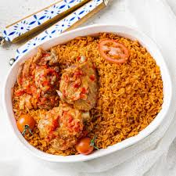

Home
JOLLOF RICE

Description
Jollof rice is a staple in West African cuisine. It's made from rice,
tomatoes, onions, peppers, and other seasonings. The dish is cooked in one
pot. It's simple and easy to make at home—and the end result is absolutely
delicious!
Ingredients
For the Base:
- 1 large red bell pepper
- 2 medium vine tomatoes
- 1 red onion
- 2 red scotch bonnet chillies
- 3 garlic cloves
- 25g fresh ginger
- 100ml water
For the rice:
- 150ml vegetable oil
- 1 red onion
- 150g double concentrated tomato purée
- 1 tbsp curry powder
- 2 tsp dried thyme
- 3 chicken stock cubes
- 2 dried bay leaves
- >600ml water
- 600g white basmati rice
Steps
- Place the base ingredients in a blender and blitz until smooth.
-
Heat the vegetable oil in a large Dutch oven set over a medium heat.
-
Add the onion and cook, stirring occasionally, for 3 minutes, then add
the tomato purée and cook, stirring frequently, until it begins to
darken, 3 to 5 minutes.
- Pour in the blended base, stir to combine and bring to a simmer.
-
Reduce the heat to medium-low and partially cover the pot with the lid –
it will splatter!
-
Cook, stirring occasionally, until the sauce is reduced by about a third
of its original volume and the oil begins to separate from the sauce, 12
to 15 minutes.
-
Stir in the curry powder, thyme, stock cubes, bay leaves and water.
-
Season generously with salt and pepper, to taste, then cover and bring
to a boil over medium-high heat.
-
Meanwhile, rinse the rice thoroughly with cold water until the water
runs clean, then drain.
- Add the rice to the sauce and stir to combine.
-
As soon as it comes to a boil, reduce the heat to low, cover the pot and
cook for 25 minutes.
-
By this point, the rice should have absorbed all the liquid and be
cooked through.
-
Remove the bay leaves, give the rice a stir and you’re ready to serve,
preferably with grilled chicken and fried plantain.